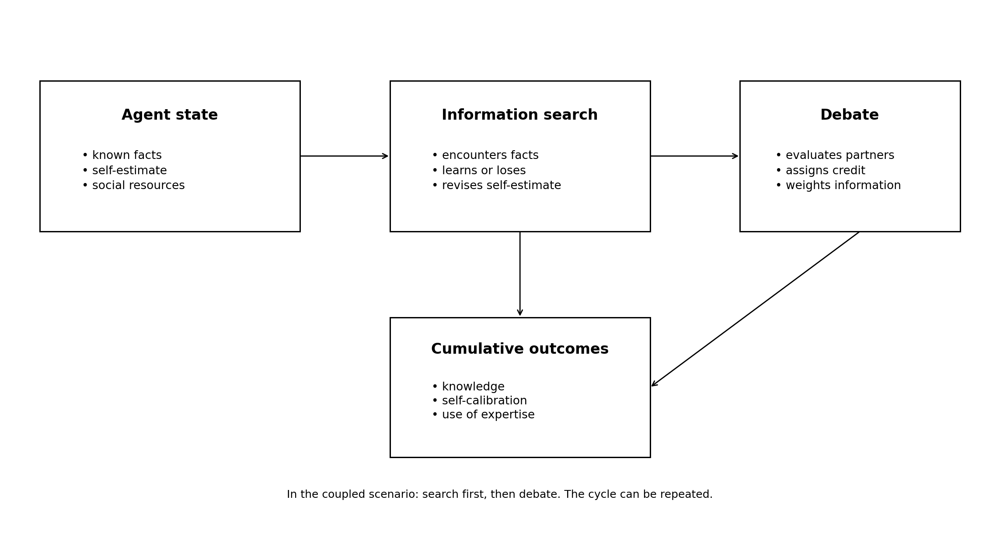

Misallocation of Epistemic Credit in Socially Embedded Learning: An Empirically Anchored Agent-Based Model of Information Search and Debate
MOVICI Working Paper 05
Resources Download PDF Data & replication package
Video Presentation
Abstract
Access to correct information is not sufficient for learning. One must still encounter it, evaluate it, assign sufficient credit to its source, and allow that information to modify one’s own knowledge. We study this chain with an agent-based model built from the MOVICI experiment. The 96 agents inherit characteristics from 96 real participants. The model distinguishes two learning pathways—Web information search and debate—as well as several stages between available expertise and effective learning. The first episode reproduces the main orders of magnitude observed in MOVICI: search yields a factual gain of about 1.4 points out of 20, whereas a single debate produces no substantial average gain. Subsequent episodes are generative experiments repeated up to 50 times, with 30 Monte Carlo replications for the main scenarios and the same-agent counterfactual. Two results dominate. First, in an information environment that continues to expand, a small differential associated with socioeconomic resources produces a growing absolute gap in knowledge stock, while the gap in knowledge density remains much smaller. Second, the simulated cooperative regime barely improves raw expertise recognition; instead, it mainly increases receptivity to partners in general. Agents give more weight to more knowledgeable partners, but also to less knowledgeable ones. This openness reduces missed corrective opportunities and increases factual knowledge acquisitions, while also increasing some losses; the advantage in net knowledge balance is therefore more variable. An ablation that neutralizes the credit-to-influence link removes the main social-learning advantage, whereas an ablation that preserves mean receptivity but removes differential allocation across partners leaves the mechanism largely intact. The model thus suggests that epistemic inclusion can improve without an equivalent improvement in social-calibration accuracy, and that small structural or interactional differences can generate cumulative trajectories when repeated.
Keywords: agent-based model; epistemic vigilance; epistemic credit; social receptivity; information search; debate; cumulative advantage; metacognition; social learning
1. Introduction
Much of what we know comes from others. We learn from books, search engines, teachers, colleagues, and people close to us. This dependence makes the accumulation of knowledge possible. It also creates a simple problem: correct information may be available without being recognized, weighted, or used.
Epistemic vigilance refers to the mechanisms by which people evaluate information and the sources that convey it (Sperber et al., 2010). Such vigilance is not limited to deciding whether a source is reliable. At least four operations should be distinguished: identifying who appears benevolent and competent, assigning that person credit, giving weight to what they say, and then integrating—or not integrating—their information.
Research on groups has long shown that the presence of expertise does not guarantee its use (Hinsz et al., 1997; Hollingshead, 2000). The sociology of status likewise shows that recognized competence and influence can be shaped by social characteristics independent of objective performance (Berger et al., 1972; Foschi, 2000; Ridgeway, 2014). The central problem is therefore less ‘who knows?’ than ‘how does available knowledge become a resource for others?’
The MOVICI experiment provides a setting in which to study this problem. Participants first search for information on the Web and then debate in small groups. Their factual knowledge increases after search. After a single debate, the average factual gain is close to zero. The cooperative or competitive context is nevertheless associated with differences in how partners are evaluated. Most importantly, participants who direct their competence judgments more accurately toward partners who are objectively more knowledgeable show greater factual progress.
A short experiment cannot reveal what these mechanisms produce after dozens of episodes. This is where the agent-based model becomes useful. It is not intended to predict exactly what would happen after fifty real debates. Rather, it asks a mechanistic question: what follows from repeatedly applying local rules that are compatible with the observed data? This approach belongs to the tradition of generative explanation (Epstein, 1999) and empirically grounded agent-based modelling (Windrum et al., 2007; Stefanelli & Seidl, 2017; Banisch & Shamon, 2024).
Our question is therefore: how can small differences in opportunities to learn and in the credit assigned to others become cumulative? We examine information search, debate, and their sequence separately. We also test which mechanisms are necessary for the resulting patterns and whether the effect of the social regime depends on better discrimination among experts or on more general receptivity to others’ contributions.
3. Empirical Basis: The MOVICI Experiment
3.1. Protocol
MOVICI includes 96 participants: 49 in the cooperative condition and 47 in the competitive condition. Participants first answer a 20-item factual-knowledge questionnaire on animal proteins. They then conduct approximately twenty minutes of open Web search. After recalling and evaluating the sources and arguments encountered, their knowledge is measured a second time. Participants then debate for twenty minutes, evaluate their partners, recall and assess arguments, and complete the factual questionnaire a third time. Table 1 summarises how this experimental sequence is translated into the model.
Debate groups contain two, three, or four participants. Condition assignment was not strictly randomised.
Table 1. From the Human Experiment to the Model
| Time point | What the participant does | What the model retains |
|---|---|---|
| Before search | 20 factual questions + self-estimated knowledge | Initial knowledge and self-estimate |
| Web search | Open search for approximately 20 minutes | Information exposure and direct learning |
| After search | Recall, evaluation, second factual questionnaire | Updated knowledge state and self-estimate |
| Debate | Discussion under cooperation or competition | Partner evaluation, assigned credit, social influence |
| After debate | Partner evaluation, recall, third factual questionnaire | Final observed state |
3.2. Empirical Results Used
Information search produces a mean gain of 1.396 points out of 20 between the first and second measurements (Vayre et al., 2026a). Initial knowledge remains the main predictor of subsequent knowledge. A socioeconomic indicator also makes a positive contribution, whereas the future debate condition has no robust effect before the interaction.
The contrast between the second and third measurements is -0.229 points out of 20 and is not significantly positive (Vayre et al., 2026b). A single debate therefore produces no substantial average factual gain. The condition is, however, associated with differences in social evaluation. Participants in the cooperative condition report, in particular, higher perceived benevolence and better self-calibration; the analyses also converge on greater under-crediting in the competitive condition. Because condition assignment was not strictly randomised, these human differences are used as observational constraints rather than as causal estimates.
One result is particularly important for the model. A partner’s objective competence predicts very little of the competence attributed to that partner on average. Yet participants who allocate their competence judgments more strongly toward partners who are objectively more knowledgeable show greater factual progress. To measure this allocation quality, we transform the competence ratings assigned to partners into relative weights that sum to 1. We then calculate the partners’ mean factual score using those weights. A positive score means that the evaluator concentrates more attention on the more knowledgeable partners. A one-standard-deviation increase in this index predicts a +0.295-point increase at the final measurement, controlling for the previous knowledge level (p = .021; N = 73; 22 debates). Table 2 summarises the empirical results used to calibrate or check the model.
Table 2. Empirical Results That Constrain or Evaluate the Model
| MOVICI observation | Main value | Role in the model |
|---|---|---|
| Gain after search | +1.396 / 20 | Sets the order of magnitude for direct learning |
| Effect of socioeconomic level after search | positive; standardised b = .472, p = .016 | Introduces a small repeated opportunity/efficiency differential |
| Effect of future condition on search | not robust; p = .440 | No direct cooperation bonus during search |
| Gain after a single debate | -0.229 / 20; p = .176 | Debate should remain close to zero in episode 1 |
| Cooperation and perceived benevolence | strong positive effect; p < .001 | Social context changes partner evaluation |
| Allocation of competence toward the best partners | +0.295 points per SD; p = .021 | Better credit orientation is associated with more learning |
4. The Agent-Based Model
This section follows the ODD protocol, widely used in JASSS. ODD stands for ‘Overview, Design concepts, and Details’ (Grimm et al., 2020). We therefore present the model’s purpose, agents, and sequence of operations first. The equations and parameters follow. This allows readers to understand the general logic before moving into the formalization.
| The Model in 30 Seconds |
|---|
| Each agent represents a MOVICI participant. Agents possess factual knowledge and an estimate of their own competence. During search, they encounter information and may acquire or lose factual knowledge. During debate, they evaluate partners, assign them more or less credit, and then give more or less weight to what those partners know. The model repeats these episodes to observe what accumulates. Cooperation and competition never award knowledge points directly: they only change how partners and the self are evaluated. |
4.1. Purpose of the Model
The model seeks to explain how two short-term mechanisms can generate long-term trajectories: first, small repeated differences in opportunities to learn during search; and second, repeated differences in the credit and receptivity assigned to partners during debate. The first episode is anchored in MOVICI. Episodes 2 to 50 are generative virtual experiments rather than chronological forecasts.
4.2. Agents and Information Environment
The model contains 96 agents. Each agent inherits data from a real participant: factual responses, self-estimated knowledge, a socioeconomic indicator, and selected indices describing visibility and relational style during debate.
The information environment initially contains 20 facts corresponding to the 20 questionnaire items. We examine two environments. In the fixed world, no new facts appear. In the renewed world, 3 new facts are added from the second episode onward; their difficulty is drawn from the distribution observed in MOVICI. After the first empirically anchored episode, both environments use the same exposure budget. The comparison therefore distinguishes learning in a finite world from learning in an information environment that continues to expand.
4.3. An Information-Search Episode
Simulated search comprises two successive regimes. The first episode provides empirical anchoring: the calibrated transition kernel is applied to the 20 initial items to remain directly comparable with MOVICI. From the second episode onward, FIXED and RENEWED use the same limited-exposure engine: each agent has ten information encounters per episode; in RENEWED, up to two may be reserved for newly introduced facts. Encounter reliability is set to 0.80 as a scenario assumption, not as an empirical estimate of Web reliability. Table 3 summarises this sequence.
Table 3. Sequence of an Information-Search Episode
| Step | What happens |
|---|---|
| 1. Anchoring / world update | In episode 1, the 20 MOVICI facts form the full pool. From episode 2 onward, RENEWED adds new facts; FIXED remains at 20 facts. |
| 2. The agent encounters facts | Episode 1: the calibrated kernel is applied to the full pool. Episodes 2–50: ten encounters per agent in both FIXED and RENEWED; up to two are reserved for new facts in RENEWED. |
| 3. The encounter may be reliable or misleading | From episode 2 onward, an encounter is reliable with probability 0.80. This value is a scenario assumption, not an estimate of Web reliability. |
| 4. The agent may acquire or lose a fact | A reliable encounter can produce an acquisition; a misleading encounter can produce a loss. Probabilities depend on prior knowledge, socioeconomic level, fact difficulty, and an information-vigilance state. |
| 5. The agent revises the self-estimate | The estimate depends on the previous self-estimate, new knowledge, and a navigation index based on search-engine results pages. |
4.4. A Debate Episode
Debate adds a social layer. Partners do not automatically transmit what they know. A partner’s information must first receive enough credit to affect learning. A social update can lead to an acquisition (0→1) when the partner possesses a fact the agent lacks, but also to a loss or erroneous revision (1→0) when a heavily weighted partner does not possess a fact currently held by the agent. Table 4 summarises the sequence.
Table 4. Sequence of a Debate Episode
| Step | What happens |
|---|---|
| 1. Group formation | Agents are grouped only with others from the same condition. The main scenario reproduces as closely as possible the observed distribution of groups of 2, 3, and 4. |
| 2. Partner rotation | In the main scenario, partners rotate at each episode. Fixed partners are tested separately as a robustness check. |
| 3. Evaluation of each partner | Each agent estimates partners’ competence and benevolence. These evaluations depend on observed cues and on the cooperative or competitive condition, plus a stochastic component. |
| 4. Credit assignment | Perceived competence and benevolence are combined to obtain the value assigned to the partner as a source of knowledge. |
| 5. From credit to influence | Partner credit is compared with the agent’s self-estimate. The more a partner is credited relative to the self, the more weight their information receives. |
| 6. Possible fact transfer | For each directed evaluator–partner relation, one fact is drawn from the available world. Partner weight modulates a possible factual acquisition (0→1) when the partner has the fact and the agent does not, or a possible loss (1→0) when the agent has the fact but a heavily weighted partner does not. |
| 7. Self-model update | The agent also revises their estimate of their own competence. Under cooperation, factual knowledge re-anchors this estimate more strongly. |
4.5. What Cooperation and Competition Change
The difference between cooperation and competition is restricted to specific social mechanisms. It does not directly change the probability of knowing a fact. In the model, the social regime changes partners’ perceived competence, their perceived benevolence, and the way the agent updates their self-estimate. Factual consequences can arise only afterward, if these differences alter epistemic credit, the weight assigned to partners, and thus the use of their information.
This construction translates a hypothesis from social interdependence theory: cooperation makes using another person’s contribution more compatible with the group goal, whereas competition makes performance comparison more salient (Johnson & Johnson, 2009). It is also consistent with work showing that social motivation directs the search for and use of information in groups (De Dreu et al., 2008), that performance goals favour relational forms of conflict regulation (Darnon et al., 2006; Sommet et al., 2014), and that a cooperative or competitive mindset changes the effect of social comparison on self-evaluation (Colpaert et al., 2015). We do not assume, however, that each participant has a measured mastery or performance goal.
4.6. Sequencing Search and Debate
In the coupled scenario, each cycle begins with search and is followed by debate. The debate therefore uses the knowledge and self-estimate that were just updated by search. In the renewed environment, new facts are added during search; they are not added a second time during debate.

Figure 1. General logic of the model. The first search episode anchors the model to MOVICI; subsequent episodes use a limited exposure budget. Debate adds source recognition, epistemic credit, receptivity, and information weighting before a possible acquisition or loss of a fact.
4.7. Measuring the Use of Expertise
We use several complementary indicators that answer different questions. In particular, we distinguish expertise recognition, mean epistemic credit, the weight assigned to more- or less-knowledgeable partners, the use of corrective opportunities, and calibration errors. Code variable names are deliberately kept out of the main text and are provided in the Appendix for replication. Table 5 defines these indicators in plain language.
Table 5. Main Social Indicators
| Question | Measure in plain language |
|---|---|
| Does the agent know who is more knowledgeable? | Accuracy in ranking partners by their actual competence. |
| How much credit does the agent assign to partners? | Mean credit assigned to others as sources of knowledge. |
| Does the agent give more weight to genuinely better partners? | Mean weight assigned to partners who know more than the agent. |
| Does the agent use available corrective opportunities? | Share of potential corrective knowledge that actually receives weight. |
| How many corrective opportunities are missed? | Complement of the preceding measure. |
| Is credit misallocated? | Mean of three directional errors: (1) missed corrective opportunities; (2) a credit-rank reversal when a partner is more knowledgeable; (3) underweighting a more knowledgeable partner. Over-crediting less knowledgeable partners is measured separately. |
| Does the agent also give weight to less knowledgeable partners? | Mean weight assigned to partners who know less than the agent; a diagnostic of general receptivity and potential over-crediting. |
4.8. Mathematical Formalization with Intuitive Interpretation
The preceding subsections are sufficient to understand the model’s logic. We now provide the equations used in the RStudio package. The essential point is where the numbers come from. They are not all chosen in the same way. Some coefficients are estimated directly from MOVICI. Others are calibrated to preserve an empirical signature when the model is extended. Finally, a small number of parameters are modelling conventions and are therefore examined through sensitivity analysis.
Where Do the Coefficients Come From?
Factual search. The constants, the effect of knowledge level, the socioeconomic effect, and the effect of fact difficulty come from a logistic calibration of item-level transitions observed in MOVICI. The small socioeconomic effect is therefore not chosen to manufacture long-term divergence: it is fixed from episode 1 and then repeated without retuning.
Metacognition. The coefficients linking the previous self-estimate, factual knowledge, and the share of time spent on search-engine results pages come from a regression estimated on the 96 participants. In MOVICI, subjective change tracks factual gain only weakly, and a greater relative amount of time on results pages predicts higher subjective knowledge at controlled factual knowledge. This exploratory result is compatible with the ‘illusion of knowledge’ described by Fisher et al. (2015), without by itself demonstrating a general illusion in MOVICI (Vayre et al., 2026a).
Debate. The effects of condition, partner visibility, and relational style on perceived competence and benevolence are estimated from MOVICI’s dyadic evaluations. Persistence in the self-estimate and its re-anchoring by knowledge under cooperation are also estimated from MOVICI. By contrast, the contribution of benevolence to credit (0.169) is a calibration parameter retained from earlier ABM development, and the scale transforming the credit gap into weight (1.0) is a modelling convention. The RStudio package explicitly tests sensitivity to the former parameter (0; 0.169; 0.338) and to the credit-to-weight scale. These parameters should therefore not be presented as coefficients directly estimated in the experiment.
Three notations are sufficient to read the equations.
| Three Notations to Know |
|---|
| g(x) = 1 / [1 + exp(-x)] transforms any score into a probability between 0 and 1. z(x) simply indicates a value’s position relative to the sample mean, in standard-deviation units. Finally, I_coop is an indicator: it equals 1 under cooperation and 0 under competition. |
- P(learn a fact) = g[-0.3975 + 0.0527·z(knowledge) + 0.1357·z(socioeconomic level) + 0.9881·fact ease + 0.1400·z(vigilance during search)]
In plain language. For a fact encountered during search, learning becomes slightly more likely when the agent has more prior knowledge, when socioeconomic resources are more favorable, when the fact is easier to learn, and when the agent’s information-vigilance state is more favorable. These coefficients come from item-level calibration on MOVICI. The socioeconomic coefficient is small in episode 1; the simulation experiment examines what its repetition produces.
- P(lose a known fact) = g[-0.7216 - 0.2155·z(knowledge) - 0.1357·z(socioeconomic level) - 0.9881·fact ease - 0.1400·z(vigilance during search)]
In plain language. The model also allows loss or incorrect integration. The preceding factors then act in the opposite direction. The coefficients in this equation are calibrated using the same item-level transition data as the learning equation.
- next self-estimate = bound[1,4](2.3646 + 0.2797·z(previous self-estimate) + 0.1810·z(current knowledge) + 0.1289·navigation index + noise)
In plain language. The agent does not reassess competence from scratch. The previous judgment matters, current knowledge matters, and the share of time spent on search-engine results pages provides an additional cue. All three coefficients are estimated from MOVICI. The last captures the exploratory association between relative time on results pages and subjective knowledge, controlling for factual knowledge (Vayre et al., 2026a).
- partner’s perceived competence = 0.1580 - 0.0127·visibility - 0.4093·Icomp + 0.3714·visibility·Icomp + noise
In plain language. Perceived competence depends on a visibility index observed during debate and on condition. These coefficients are estimated from MOVICI’s dyadic evaluations. The interaction indicates that visibility does not play the same role under cooperation and competition.
- perceived benevolence = 0.3652 + 0.0880·relational style - 0.7447·Icomp + noise
In plain language. Perceived benevolence depends on a relational index observed in the exchanges and on condition. The strong negative competition term reproduces the empirical result that perceived benevolence is substantially higher in the cooperative condition (Vayre et al., 2026b).
- credit assigned to partner = perceived competence + 0.169·perceived benevolence
In plain language. Epistemic credit combines perceived competence and perceived benevolence. The coefficient 0.169 is not directly estimated in the final dyadic regression; it is a calibration parameter retained from model development. Its function is to allow a relational component, weaker than the competence component, to contribute to credit.
- partner weight = g[(partner credit - self-estimate) / 1]
In plain language. The same partner does not receive the same weight from every agent. If the partner’s credit exceeds the agent’s self-estimate, that partner’s information receives greater weight. The transformation scale is fixed at 1 by convention and then varied in the sensitivity analysis.
- P(learn from partner) = P(learn content) × partner weight
In plain language. A partner may possess relevant information without that information being integrated. Social weight acts as a gate for uptake and revision. The credit-to-influence link is tested through an ablation that fixes every partner’s weight at 0.5. This intervention is a causal-necessity test within the model; by itself, it does not identify the causal mechanism in the human participants.
- next self-estimate = 0.7446·previous self-estimate + 0.1295·z(knowledge)·Icoop + 0.6297·noise
In plain language. The self-estimate is persistent. The coefficients 0.7446 and 0.1295 are estimated in a constrained model fitted to MOVICI. Under cooperation, factual knowledge contributes to re-anchoring self-evaluation; under competition, this direct term is fixed at zero in the retained specification. This asymmetry corresponds to the empirical differences in self-calibration observed across conditions (Vayre et al., 2026b).
- expertise-use efficiency = Σ(corrective opportunities × partner weight) / Σ(corrective opportunities)
In plain language. In the implementation, the corrective opportunity offered by a partner is the positive difference between that partner’s knowledge stock and the agent’s. It is zero when the partner does not know more. Expertise-use efficiency is the mean of these gaps weighted by the weight actually assigned to the partner. The missed-opportunity rate equals 1 minus this efficiency.
- epistemic credit misallocation = mean[missed corrective opportunities; credit-rank reversals; underweighting of a more knowledgeable partner]
In plain language. The composite index combines the three errors defined in Table 5: missed corrective opportunities, credit-rank reversals, and underweighting of a more knowledgeable partner. It is computed only when the comparison is defined. The index is intentionally directional: it measures underuse of available corrective expertise rather than all possible calibration errors. Over-crediting a less knowledgeable partner is tracked separately; it can constitute miscalibration and increase some losses, but it is not in itself a credibility deficit suffered by the over-credited partner. The main index therefore does not, by itself, measure epistemic injustice.
5. Simulation Experiments
The model description and the simulation experiment are distinct. The model defines the rules; the experiments below define the situations in which those rules are run. This distinction is important for interpreting the results correctly.
5.1. The Six Main Scenarios
We cross three learning modes with two types of information environment, yielding six scenarios. Each scenario is repeated 30 times with different random draws. The same 96 agents are re-created from the MOVICI data at the beginning of every replication. Table 6 presents the six main scenarios.
Table 6. The Six Main Scenarios
| Learning mode | Fixed world | Renewed world | Question |
|---|---|---|---|
| Search only | 20 facts available throughout the simulation | 3 new facts per cycle from episode 2 onward | Does learning saturate when the world is finite? Does it continue when new information appears? |
| Debate only | Partners exchange information in a world of 20 factual-knowledge items | New facts are added and distributed in the population to maintain new opportunities for social learning | Can effects that are weak in the short run become cumulative? |
| Search then debate | Search followed by debate on the same updated state | Search adds new facts; debate then uses that world without a second expansion | Does search-based learning change dependence on others’ contributions and the self-model? |
In the renewed debate-only scenario, new facts must be distributed somewhere in the population; otherwise no agent could transmit them. These exogenous additions are not counted as social learning. To measure learning produced by debate, we count only acquisitions minus losses generated through exchanges among agents.
5.2. What an Episode Means
An episode is not a day, week, or year. It represents an abstract occurrence of the process under study: one search, one debate, or one search followed by one debate. We observe episodes 1, 5, 10, 15, 20, 25, and 50. Long-run results therefore describe the shape of repeated dynamics, not a chronological forecast.
5.3. Group Composition and Partner Rotation
In the main debate simulations, agents remain in their empirical condition: 49 under cooperation and 47 under competition. Groups are formed separately within each condition. In the empirical distribution, 17 participants belong to groups of 2, 35 to groups of 3, and 44 to groups of 4. Because groups must also be separated by condition, the closest feasible partition is 16, 36, and 44 participants, respectively. Partners are then recomposed at each episode.
5.4. Same-Agent Counterfactual Comparison
A population comparison can conflate contextual effects with initial differences between people. We therefore add a stricter computational intervention. Each agent is simulated twice from exactly the same initial state: once under the cooperative regime and once under the competitive regime. Random draws are paired as closely as possible between the two versions. The resulting difference therefore isolates the causal effect of the mechanisms that the model makes regime-dependent, conditional on the formalized architecture.
This comparison is limited to the renewed debate-only and search-then-debate scenarios. It does not claim to reconstruct all behavioural mediations that might occur in the human experiment, nor does it retrospectively turn MOVICI into a randomised trial. In this article, causal language is reserved for interventions performed within the model; human differences between conditions remain observational constraints.
5.5. Mechanism, Robustness, and Sensitivity Tests
We conduct four mechanism-removal or mechanism-neutralization tests. Each modifies one specific rule and reruns the simulation. These interventions identify which components are necessary for the model result and distinguish general receptivity from differential allocation across sources. Table 7 summarises the four tests.
Table 7. Mechanism-Removal Tests
| Test | What is removed or neutralized | Question |
|---|---|---|
| Remove the socioeconomic search effect | The small coefficient associated with socioeconomic resources is set to zero | Does the cumulative knowledge gap disappear? |
| Remove relational memory | Evaluations of a partner are no longer averaged with previous encounters | Does the dynamic depend on a persistent dyadic relationship? |
| Remove the credit → influence link | All partners receive a fixed weight of 0.5, regardless of the credit assigned to them | Does social credit still produce a learning advantage when it can no longer change influence? |
| Neutralize differential credit allocation | Each evaluator’s mean partner weight is preserved, but that same weight is assigned to all of their partners | Does the effect arise from general receptivity to others or from fine-grained allocation across sources? |
We also conduct two social-robustness checks: fixed partners instead of rotating partners, and groups of four for all agents. Three targeted sensitivity analyses separately vary the rate at which new information arrives, the strength with which the credit gap is transformed into weight, and the contribution of benevolence to credit. To limit computational cost, these extensions are repeated five times per variant, whereas the main scenarios and same-agent counterfactual are repeated 30 times. This strategy prioritizes targeted mechanistic tests over an exhaustive sweep of all parameters (Thiele et al., 2014).
5.6. Why 30 Replications?
A simulation contains stochasticity, so two otherwise identical executions may produce slightly different values. We repeat the main scenarios 30 times and summarise variation across these replications. Simulation replications are never treated as 30 additional human participants. Monte Carlo quantiles describe variability across simulated worlds; they are not confidence intervals for a human population. We also examine the stability of estimates across 10, 20, and 30 replications.
6. Empirical Anchoring and First-Episode Checks
We distinguish two uses of the MOVICI data. A calibration value is used directly to set a model mechanism. A structural check is used differently: it verifies that the model does not produce a result that is clearly incompatible with the experiment. This distinction avoids presenting a value used in model construction as independent validation. Table 8 compares the human data with the first simulated episode.
Table 8. Comparison of Human Data and the First Simulated Episode
| Signature | MOVICI | Simulation, episode 1 | Use |
|---|---|---|---|
| Factual gain after search (/20) | +1.396 | +1.423 | Calibration |
| Factual gain after debate (/20) | -0.229 | +0.039 | Structural check |
| Raw effect of socioeconomic level after search | +0.562 | +0.525 | Calibration |
| Effect of cooperation/competition condition on learning during information search | +0.284 | -0.110 | Structural check |
| Effect of cooperation on perceived competence | +0.410 | +0.406 | Calibration |
| Effect of cooperation on perceived benevolence | +0.712 | +0.774 | Calibration |
Differences are small for the main calibration targets. The post-search gain is +1.396 in MOVICI and +1.423 in the simulation. The aggregate socioeconomic effect is +0.562 in the data and +0.525 in the simulation, whereas the elementary SES coefficient was calibrated at the item-transition level. Condition-associated effects on perceived competence and benevolence are also close. The gain after a single debate remains close to zero in both cases, although its direction differs. The human effect of future debate condition on search, used only as a structural check, is not reproduced and was not robust in MOVICI.
The supplementary analysis of functional expertise allocation is also reproduced in the replication scripts: a one-standard-deviation improvement in allocation predicts +0.295 points of final knowledge, controlling for prior knowledge (CR2 p = .021; N = 73; 22 debates).
7. Simulation Results
7.1. Search Saturates in a Fixed World and Continues in a Renewed World
In the fixed world, agents learn progressively and then approach a plateau. Mean gain is +1.423 facts at the first episode, +4.392 at the fifth, +5.989 at the tenth, +7.215 at the twenty-fifth, and +7.420 at the fiftieth. Agents then master, on average, about 82% of the 20 available facts. Table 9 presents the full trajectories for the six scenarios.
In the renewed world, the same exposure engine does not saturate in the same way. Mean gain reaches +7.184 at the fifth episode, +14.827 at the tenth, +37.805 at the twenty-fifth, and +76.448 at the fiftieth. At that point, agents know an average of 85.448 facts, or about 51% of the available information environment. The FIXED/RENEWED comparison therefore holds the exposure budget constant after episode 1; what changes is whether new information can continue to enter the environment.
Table 9. Net Knowledge Gain or Cumulative Social Learning by Scenario
| Scenario | 1 | 5 | 10 | 25 | 50 |
|---|---|---|---|---|---|
| Search, fixed world | 1.423 | 4.392 | 5.989 | 7.215 | 7.420 |
| Search, renewed world | 1.423 | 7.184 | 14.827 | 37.805 | 76.448 |
| Debate, fixed world | 0.039 | 0.142 | 0.256 | 0.531 | 0.782 |
| Debate, renewed world | 0.039 | 0.144 | 0.242 | 0.543 | 1.105 |
| Search then debate, fixed world | 1.445 | 4.391 | 5.949 | 7.154 | 7.373 |
| Search then debate, renewed world | 1.445 | 7.232 | 14.899 | 37.897 | 76.601 |
7.2. A Small Socioeconomic Differential Produces Cumulative Advantage in an Expanding Information Environment
In the renewed environment, the knowledge-stock gap associated with socioeconomic level is already positive in the first episode: +0.525 facts. It then increases steadily: +0.852 at episode 5, +1.241 at episode 10, +2.607 at episode 25, and +4.946 at episode 50. The search-then-debate scenario produces an almost identical trajectory. Relative to the size of the world, the density gap is much smaller but remains positive, increasing from about +0.026 in the first episode to +0.030 in the fiftieth. Table 10 reports effects on stock and density jointly.
Together, these results clarify the form of cumulative advantage. The model does not show unlimited proportional divergence within a closed stock. Instead, it shows that a small differential in opportunity or efficiency, repeated in an information environment that continues to expand, generates a growing absolute knowledge gap while maintaining a much smaller relative differential. This assumption is substantively plausible for scientific and digital environments in which new knowledge continually becomes available. When the socioeconomic coefficient is set to zero, the SES effect on knowledge stock at episode 50 becomes -0.124 in search alone and +0.218 in the coupled scenario, with Monte Carlo quantiles broadly including zero; density effects likewise become close to zero.
Table 10. Evolution of the Knowledge Gap Associated with Socioeconomic Level
| Scenario | Episode 1 | 5 | 10 | 25 | 50 |
|---|---|---|---|---|---|
| Renewed search – SES effect on stock | 0.525 | 0.852 | 1.241 | 2.607 | 4.946 |
| Renewed search – SES effect on density | 0.0262 | 0.0266 | 0.0264 | 0.0283 | 0.0296 |
| Renewed coupled – SES effect on stock | 0.528 | 0.882 | 1.299 | 2.612 | 4.991 |
| Renewed coupled – SES effect on density | 0.0264 | 0.0276 | 0.0276 | 0.0284 | 0.0299 |
| No SES effect – search, episode 50 | — | — | — | — | -0.124 stock; -0.0007 density |
| No SES effect – coupled, episode 50 | — | — | — | — | +0.218 stock; +0.0013 density |
Reading. The absolute gap widens in a renewed world, whereas the relative density gap remains much smaller. Ablating the socioeconomic coefficient almost completely removes this gradient. The model also contains weak cognitive recursion: previously acquired knowledge slightly facilitates subsequent acquisition and reduces the probability of loss.
7.3. A Single Debate Produces Little Learning, but Repeated Debates Can Accumulate
Debate remains far less powerful than search for factual-knowledge learning. After one episode, the mean social-learning gain is +0.039. In the fixed world, cumulative net learning reaches +0.782 by episode 50. In the renewed world, it reaches +1.105. The important result is not that debate becomes a massive source of knowledge. Rather, a very small effect in each episode can nevertheless accumulate when partners and corrective opportunities are renewed.
7.5. Ablations Distinguish Influence, General Receptivity, and Differential Allocation
The first test preserves differences in credit while preventing that credit from changing partners’ actual influence: every partner receives a fixed weight of 0.5. At episode 50 of the debate scenario, cooperative credit remains higher (+0.544 in these ablation runs), but the advantage in corrective-opportunity use becomes exactly zero. The +1.257 acquisition advantage in the full model becomes -0.073 on average. In the coupled scenario, a small acquisition difference remains (+0.219), but the specific credit-to-weight channel is likewise neutralized. The intervention therefore establishes the internal necessity of the credit-to-influence link for the main social-learning advantage in debate.
A second ablation preserves each evaluator’s mean receptivity to others but assigns that same mean weight to all of their partners. It therefore removes differential allocation across sources without removing general social openness. At episode 50 of the debate scenario, the cooperative acquisition advantage remains +1.244, expertise-use efficiency remains +0.172, and the reduction in misallocation remains -0.263. Fine-grained differentiation among partners is therefore not necessary for the main mechanism: a large share of the cooperative effect comes from general receptivity to others’ contributions.
Finally, removing relational memory also leaves the main result largely intact: at episode 50 of the debate scenario, the cooperative advantage remains about +0.165 for corrective-opportunity use and +1.238 acquisitions in the five extension runs. With rotating partners, persistence of a specific dyadic relationship is therefore not necessary for the main mechanism. These ablations establish causal dependencies within the model; they are not independent causal evidence for the human participants.
7.6. Results Are Robust to Several Scenario Changes
The qualitative conclusions remain similar when all groups contain four agents or when partners remain fixed. They also retain the same direction when the strength of the credit-to-influence link is varied. Sensitivity to the benevolence contribution is particularly informative: even when this contribution is set to zero, the cooperative advantage in corrective-opportunity use and acquisitions remains; increasing it mainly strengthens the magnitude of receptivity. The rate at which new information enters the environment logically changes final knowledge stock and the size of the absolute SES-associated gap, without altering the general mechanism.
The main estimates change little between 20 and 30 replications. For example, the socioeconomic gap in knowledge stock at episode 50 changes from +5.009 to +4.946; the cooperative reduction in misallocation changes from -0.231 to -0.238; expertise-use efficiency from +0.156 to +0.161; and the credit advantage from +0.532 to +0.531. The central results are therefore stable between 20 and 30 replications in this version of the model.
7.7. Search Re-Anchors the Self-Model
In the renewed world, final knowledge stock in the search-then-debate scenario is almost identical to search alone: 85.601 versus 85.448 facts on average. Debate therefore does not add a second massive gain when document-based search is already strongly renewing knowledge. This proximity does not mean that debate has no effect; rather, it indicates that social acquisitions and losses largely offset each other at the level of final stock.
The coupling does, however, change metacognition. After fifty debates without search, the self-model difference between the cooperative and competitive regimes is -0.234. When each debate is preceded by search, this gap falls to -0.012. In the ABM, information acquired through document-based search therefore regularly re-anchors self-estimation and limits the divergence generated by the social context.
8. Discussion
8.1. The Central Problem Is Converting Expertise into Learning
MOVICI and the model converge on one point: the presence of a more knowledgeable person is not yet a learning resource. Their contribution must be encountered, receive enough credit, and that credit must be able to change how their information is used. This distinction is consistent with several findings from the learning and group literatures. Groups can fail to pool information that is already available (Stasser & Titus, 1985). Conversely, shared experience can improve performance by facilitating recognition and use of members’ expertise (Littlepage et al., 1997), and perceptions of relative expertise shape what is learned and remembered in work relationships (Hollingshead, 2000).
The most instructive human result is the coexistence of two facts. On average, objective competence is poorly reflected in perceived competence; yet participants who direct their judgments more strongly toward partners who are actually more knowledgeable show greater progress. The simulation adds an important nuance: when the same agent is exposed to both formalized social regimes, the cooperative regime improves raw expertise recognition very little but strongly increases credit and receptivity toward others. It gives more weight to more knowledgeable partners, but also to less knowledgeable partners. The cooperative mechanism is therefore less an improvement in discrimination than a reduction in the risk of overlooking a potentially corrective contribution.
This result does not imply that all cooperative learning is weak. Meta-analyses find positive average effects of cooperative learning on achievement (Kyndt et al., 2013). But the factual benefits of argumentation are not automatic: Wecker and Fischer (2014) show that interventions can improve argumentation without producing an equally clear gain in domain knowledge. Here, greater receptivity produces more acquisitions but also more losses. The ablation of the credit-to-influence link clarifies the functional condition: a difference in credit does not produce the main cognitive advantage if it no longer changes the effective use of information.
8.2. Cumulative Inequalities: Connections with Economics and Sociology
The socioeconomic result has a familiar form in the literature on accumulation. A small initial or repeated advantage can itself become a resource for later gains. In the economics of skill formation, Cunha and Heckman (2007) describe self-productivity and dynamic complementarity: skills acquired at one stage can increase the returns to subsequent learning. Heckman and Mosso (2014) situate these mechanisms within inequalities in development and mobility. In our model, previously acquired knowledge slightly increases the probability of learning new facts and slightly decreases the probability of losing them, adding weak cognitive recursion to the repeated opportunity differential.
Sociology describes a related logic through cumulative advantage. Merton (1968) shows how advantages can reinforce themselves in scientific careers. DiPrete and Eirich (2006) generalize the mechanism to inequality production. In the learning sciences, Stanovich (1986) described a ‘Matthew effect’ in reading. The model directly reproduces none of these institutions and does not assume a closed information stock. It shows a minimal form of cumulative advantage in an expanding environment: a small SES-associated differential, repeated as new information becomes available, generates a growing absolute gap in knowledge stock. The density gap remains much smaller but does not disappear. When the SES coefficient is removed, both gradients become close to zero.
This dynamic is also consistent with research on digital inequalities. Differences in the benefits derived from technologies persist beyond material access and are associated with differences in skills, uses, and social resources (Hargittai, 2010; van Deursen & van Dijk, 2011; Helsper, 2012; van Deursen & Helsper, 2015; Scheerder et al., 2017; Robinson et al., 2015). The model provides one possible micro-dynamic: in an environment where the amount of accessible information itself continues to grow, small repeated differences in the chances of exploiting that information can sustain a modest relative differential while producing an increasingly large absolute knowledge gap.
8.3. Credibility Deficits, Status, and Epistemic Injustice
The model’s epistemic credit misallocation is not yet epistemic injustice. To speak of testimonial injustice in Fricker’s (2007) sense, one would need to show that a credibility deficit is linked to prejudice or to a relevant social relation. The current model does not directly introduce gender, race, disability, or a stigmatized status as a cause of credit. Moreover, its main index is directional: it measures the risk of underusing available corrective expertise. Over-crediting a less knowledgeable source is tracked separately as a calibration error or potential receptivity cost, not as an injustice suffered by the over-credited person.
The model nevertheless provides a mechanistic chain that can be connected to this literature. Goffman (1963) shows how stigma changes expectations and interactional treatment. He does not provide a theory of epistemic credibility, but his analysis helps explain how a socially discredited identity can shape the reception of a person even before their content is evaluated. Link and Phelan (2001) further emphasize the combination of labeling, stereotyping, separation, status loss, and discrimination under conditions of power.
Expectation states theories provide a more direct link to competence. Status characteristics can create performance expectations that subsequently organize participation and influence (Berger et al., 1972; Kalkhoff & Thye, 2006; Ridgeway, 2014). Foschi (2000) likewise shows that different standards can be applied when attributing the same competence. Experiments holding qualifications constant document evaluation disparities related to motherhood (Correll et al., 2007) and gender in science (Moss-Racusin et al., 2012). Research on epistemic exclusion further shows that women faculty and faculty of color report greater devaluation of their scholarly contributions (Settles et al., 2022).
A future extension could therefore represent a structural credibility deficit simply: at equal objective competence, a given social status would repeatedly lower perceived competence or assigned credit. The existing chain predicts what may follow: less weight assigned to the source, more missed corrective opportunities, and eventually divergent learning trajectories. The present results also add another possibility: a more receptive regime can reduce the risk of under-crediting without necessarily improving calibration accuracy. Such a dynamic could limit some mechanisms of epistemic exclusion, but this extension remains to be tested and is not inferred from the current MOVICI data.
8.4. Cooperation, Competition, and the Strategic Value of Others
The difference between cooperation and competition is first consistent with research on interdependence, motivated information processing, and sociocognitive conflict. Social motivation shapes what group members seek and use as information (De Dreu et al., 2008). Performance goals favour regulation centred more on relative competence and self-assertion (Darnon et al., 2006; Sommet et al., 2014). A competitive or cooperative mindset also changes the effect of social comparison on self-evaluation (Colpaert et al., 2015). In the ABM, these differences are represented as changes in social evaluation and the self-model, never as a direct knowledge bonus.
Economics provides a more distant analogy. In tournament models, rewards depend on relative rank rather than absolute performance alone (Lazear & Rosen, 1981). MOVICI is neither a labour market nor a monetary tournament. The analogy concerns only the following property: when success depends more strongly on relative position, information provided by others can change in strategic value. The results nevertheless suggest that the cooperative contrast is not reducible to better source ranking; it mainly affects willingness to let others’ contributions influence the agent.
8.5. Receptivity, Calibration, and Epistemic Inclusion
The central debate result leads us to distinguish three properties that are often conflated. Expertise recognition concerns the ability to identify who knows more. Credit calibration concerns the fit between objective competence and assigned credit in both directions: under-crediting and over-crediting. Epistemic inclusion, in the functional sense used here, refers more modestly to whether others’ contributions have a sufficient chance of being heard and of changing information processing. In the model, cooperation can improve this inclusion without improving raw recognition and while generating more over-crediting.
This trade-off is not necessarily irrational. A socially generous heuristic can be locally miscalibrated yet functionally effective in an environment where some partners possess corrective information. The ablation that preserves mean receptivity while removing differentiation across partners reinforces this interpretation: the main advantage in factual-knowledge acquisitions remains. Cooperation therefore mainly reduces the risk of failing to listen to available expertise; it guarantees neither perfect expert selection nor a net knowledge gain at every horizon.
8.6. Human–Machine Learning and Trust Calibration
MOVICI Web search is mediated primarily by a search engine that algorithmically ranks access to sources and only secondarily by generative artificial intelligence. The protocol therefore cannot be equated with systematic use of generative AI. Moreover, the connection with the present results mainly concerns metacognition. In MOVICI, factual gain and change in subjective knowledge are weakly associated. In addition, a larger share of time spent on search-engine results pages predicts higher subjective knowledge when factual knowledge is controlled. This exploratory association suggests that a cue of access or familiarity can feed the feeling of knowing without exactly tracking factual knowledge stock (Vayre et al., 2026a).
This result is consistent with Fisher et al. (2015), who show that online search can inflate estimates of internal knowledge, and with Sparrow et al. (2011), who show that information availability changes what is remembered. In the simulation, this mechanism is represented modestly: self-estimation depends on actual knowledge but also on a navigation cue. The coupling result is complementary: when search regularly precedes debate, divergence in self-estimation between the two social regimes becomes almost null. This is a result of the simulated scenario, not a demonstrated general property of all online search.
The literature on trust in automation (Lee & See, 2004) and on algorithm aversion or appreciation (Dietvorst et al., 2015; Logg et al., 2019) therefore becomes relevant to a future extension in which an algorithmic source would itself be evaluated, credited, and weighted as a partner. It does not provide direct validation of the current Web-search scenario.
Table 12 summarises these connections. It does not present external studies as numerical validations of the model. The comparison concerns the form of mechanisms and regularities.
Table 12. Connections between Simulation Results and Research in Economics, Sociology, and the Learning Sciences
| Simulation result | Comparable research | What is comparable | Limit |
|---|---|---|---|
| A small socioeconomic differential becomes cumulative in an expanding world | Cunha & Heckman (2007); DiPrete & Eirich (2006); digital-inequality literature | A repeated advantage can produce a growing absolute gap even when the relative gap remains more modest | The model is neither an economic human-capital production function nor a real longitudinal survey; world expansion is a theoretical assumption |
| Objective competence and credit can diverge | Berger et al. (1972); Foschi (2000); Ridgeway (2014); Podolny (1993) | Status, reputation, or expectations can shape influence beyond objective quality | MOVICI does not directly manipulate these statuses |
| A credit deficit can produce missed learning opportunities | Goffman (1963); Link & Phelan (2001); Settles et al. (2022) | Social devaluation can durably alter the reception of a person and their contributions | The current model contains no stigmatized identity |
| The cooperative regime mainly increases social receptivity | Johnson & Johnson (2009); De Dreu et al. (2008); Darnon et al. (2006); Colpaert et al. (2015); Lazear & Rosen (1981) | Goal structure can alter willingness to listen to and integrate others’ contributions without necessarily improving expert detection | MOVICI does not strictly randomize condition; the causal result concerns the simulated regime |
| Credit has cognitive effects only if it changes effective influence | Stasser & Titus (1985); Littlepage et al. (1997); Hollingshead (2000) | Available expertise improves performance only when it is recognized and actually mobilized | The necessity test is internal to the model; external studies support only the mechanism’s plausibility |
| Search re-anchors self-estimation | Fisher et al. (2015); Sparrow et al. (2011); Lee & See (2004) | Technical environments can change memory, the feeling of knowing, and dependence on external sources | The current scenario models Web search; it does not yet simulate generative AI as a partner |
| Epistemic inclusion can improve without better calibration | Johnson & Johnson (2009); De Dreu et al. (2008); literature on expertise use | Greater general receptivity can reduce missed corrective expertise while also increasing over-crediting | The model does not yet test a stigmatized status or testimonial injustice in the strong sense |
8.7. What the Model Can Explain
The value of the model lies not only in reproducing plausible curves, but especially in the ability to intervene on a mechanism and observe what disappears. Removing the credit-to-influence link shows that social credit cannot generate the main learning advantage in debate if it no longer changes uptake. Conversely, neutralizing differential allocation across partners while preserving mean receptivity leaves the effect largely intact: general receptivity is therefore sufficient for a large part of the mechanism. Removing the small socioeconomic effect, in turn, eliminates the cumulative gradient. These tests establish falsifiable dependencies within the model without being presented as independent causal validations in humans.
This logic follows the idea of generative explanation: specify explicit local rules, check their compatibility with relevant observations, and then study what they produce when repeated (Epstein, 1999; Windrum et al., 2007).
9. Limitations
The model is built from a predominantly student sample and a single debate topic. Its parameters should not be interpreted as universal constants of human learning.
The cooperative versus competitive condition was not strictly randomised. Human differences between conditions should therefore remain described as observational associations. The same-agent counterfactual isolates the effect of changing social regime within the ABM, conditional on the formalized mechanisms; it does not retrospectively turn the experiment into a randomised trial.
The model strongly simplifies knowledge. A fact is either known or unknown. The semantic structure of arguments, emotions, rhetorical strategies, and the full distinction between private belief and public expression are not represented.
The renewed world is a theoretical experiment. Three new facts per episode correspond to no natural unit of time. Large values at episode 50 should be read as conditional consequences of repeated rules, not as forecasts of how many facts a student would actually learn. The stock/density comparison is precisely intended to distinguish absolute accumulation from the relative share of the world mastered.
Finally, the 30 Monte Carlo replications quantify the model’s internal stochasticity but do not propagate the full sampling uncertainty of coefficients estimated from the 96 participants. Sensitivity analyses in the RStudio package are deliberately targeted at a small number of modelling conventions or scenario parameters (world growth, the credit-to-weight scale, and the contribution of benevolence) in order to keep the package computationally tractable. Extensions are run for five replications per variant and should be read as qualitative mechanism checks rather than as a global analysis of parameter uncertainty.
Epistemic credit misallocation is not a direct measure of epistemic injustice. Testing such an extension would require explicitly manipulating or measuring social statuses, stereotypes, and their effects independently of objective competence. Likewise, over-crediting less knowledgeable partners is interpreted here as a calibration error or possible cost of receptivity, not as an injustice toward the over-credited person.
10. Data, Code, and Reproducibility
The RStudio package, scripts, frozen parameters, minimally necessary pseudonymized data, ODD/ODD+D description, variable and output dictionaries, automated tests, and scripts reproducing the results are prepared for OSF deposit. The package distinguishes a FAST mode for technical verification from a STANDARD mode for publication results. The permanent link and DOI will be added in the submitted version. The archived version number provides traceability across code, results, and manuscript.
11. Conclusion
The model starts from a simple idea: having knowledge around oneself is not yet learning. Several steps lie between available expertise and changes in one’s own knowledge: encountering information, recognizing the source, assigning it credit, giving it weight, and integrating what it contributes.
Information search produces knowledge directly. In a renewed world, a small differential associated with socioeconomic resources repeats and generates cumulative advantage: the absolute stock gap grows strongly while the density gap remains much smaller. Debate produces far less net learning in the short term but changes how information from others is used. In the counterfactual simulations, the cooperative regime barely improves raw detection of who knows more. It mainly increases receptivity to partners in general: more weight is assigned to more knowledgeable partners, but also to less knowledgeable partners. This openness reduces missed corrective opportunities and increases acquisitions, while also increasing some losses; its advantage for net knowledge stock therefore remains more variable.
These results connect two forms of embeddedness. Structural conditions distribute opportunities to learn in an information environment that may continue to expand. Interactional situations locally determine how strongly others’ contributions can weigh on knowledge revision. States produced in one episode become the starting point for the next. The model thus shows that greater epistemic inclusion can emerge without an equivalent improvement in calibration accuracy, and that small structural or interactional differences can become trajectories when repeated.
Appendix A. Correspondence with Code and Replication Parameters
This appendix lists the technical names required for replication. They are omitted from the main text to preserve readability.
Table A1. Readable Article Labels and Names Used in the Files
| Concept in the article | Name in the code |
|---|---|
| Knowledge stock | KnowledgeStock |
| Share of the information environment mastered | KnowledgeDensity |
| Self-estimated competence | SelfCredit_z |
| Recognized partner expertise | RecognizedExpertise |
| Perceived benevolence | BenevolenceSignal |
| Credit assigned to partner | OtherCredit |
| Effective partner weight | PartnerWeight |
| Share of corrective opportunities used | ExpertUseEfficiency |
| Missed corrective opportunity rate | MissedCorrectiveOpportunityRate |
| Epistemic credit misallocation | EpistemicCreditMisallocationIndex |
| Human functional expertise-allocation index | ExpertiseAllocationGain |
| Weight assigned to less knowledgeable partners | WeightLessExpert |
| Rate of overweighting less knowledgeable partners | OverweightLessExpertRate |
| Cumulative acquisitions | CumulativeLearningAcquisitions |
| Cumulative losses | CumulativeLearningLosses |
| Cumulative net balance | CumulativeLearningBalance |
Table A2. Selected Central Parameters. The OSF Configuration File Contains the Full List.
| Parameter | Value | Role |
|---|---|---|
| Socioeconomic effect per search transition | 0.1357 | Small repeated learning differential |
| Effect of fact ease | 0.9881 | Easier facts are easier to acquire |
| Effect of information vigilance | 0.1400 | Contribution of the information-weighting state |
| Persistence of self-estimation | 0.7446 | Inertia of the self-model across debates |
| Knowledge re-anchoring under cooperation | 0.1295 | Additional link between knowledge and self-evaluation under cooperation |
| Contribution of benevolence to credit | 0.1690 | Relational component of credit assigned to others |
| Credit → weight scale | 1.0000 | Strength of the transformation from relative credit to influence |
| Longitudinal search exposure budget | 10 | Same exposure capacity in FIXED and RENEWED from episode 2 onward |
| Probability that a search encounter is reliable | 0.80 | Scenario assumption for episodes 2–50 |
| Sensitivity of benevolence contribution | 0; 0.169; 0.338 | Targeted robustness test of the social mechanism |
References
Ames, C. (1992). Classrooms: Goals, structures, and student motivation. Journal of Educational Psychology, 84(3), 261–271. https://doi.org/10.1037/0022-0663.84.3.261
Anderson, C., & Kilduff, G. J. (2009). Why do dominant personalities attain influence in face-to-face groups? The competence-signaling effects of trait dominance. Journal of Personality and Social Psychology, 96(2), 491–503. https://doi.org/10.1037/a0014201
Arcila-Valenzuela, M., & Páez, A. (2024). Testimonial injustice: The facts of the matter. Review of Philosophy and Psychology, 15, 585–602. https://doi.org/10.1007/s13164-022-00662-w
Banisch, S., & Shamon, H. (2024). Validating argument-based opinion dynamics with survey experiments. Journal of Artificial Societies and Social Simulation, 27(1), 17. https://doi.org/10.18564/jasss.5305
Berger, J., Cohen, B. P., & Zelditch, M., Jr. (1972). Status characteristics and social interaction. American Sociological Review, 37(3), 241–255. https://doi.org/10.2307/2093465
Butler, G., Pigozzi, G., & Rouchier, J. (2019). Mixing dyadic and deliberative opinion dynamics in an agent-based model of group decision-making. Complexity, 2019, 3758159. https://doi.org/10.1155/2019/3758159
Butler, G., Pigozzi, G., & Rouchier, J. (2020). An opinion diffusion model with vigilant agents and deliberation. In Multi-Agent-Based Simulation XX (pp. 81–99). Springer. https://doi.org/10.1007/978-3-030-60843-9_7
Cheng, J. T., Tracy, J. L., Foulsham, T., Kingstone, A., & Henrich, J. (2013). Two ways to the top: Evidence that dominance and prestige are distinct yet viable avenues to social rank and influence. Journal of Personality and Social Psychology, 104(1), 103–125. https://doi.org/10.1037/a0030398
Colpaert, L., Muller, D., Fayant, M.-P., & Butera, F. (2015). A mindset of competition versus cooperation moderates the impact of social comparison on self-evaluation. Frontiers in Psychology, 6, 1337. https://doi.org/10.3389/fpsyg.2015.01337
Correll, S. J., Benard, S., & Paik, I. (2007). Getting a job: Is there a motherhood penalty? American Journal of Sociology, 112(5), 1297–1338. https://doi.org/10.1086/511799
Cunha, F., & Heckman, J. (2007). The technology of skill formation. American Economic Review, 97(2), 31–47. https://doi.org/10.1257/aer.97.2.31
De Dreu, C. K. W., Nijstad, B. A., & van Knippenberg, D. (2008). Motivated information processing in group judgment and decision making. Personality and Social Psychology Review, 12(1), 22–49. https://doi.org/10.1177/1088868307304092
Darnon, C., Muller, D., Schrager, S. M., Pannuzzo, N., & Butera, F. (2006). Mastery and performance goals predict epistemic and relational conflict regulation. Journal of Educational Psychology, 98(4), 766–776. https://doi.org/10.1037/0022-0663.98.4.766
Dietvorst, B. J., Simmons, J. P., & Massey, C. (2015). Algorithm aversion: People erroneously avoid algorithms after seeing them err. Journal of Experimental Psychology: General, 144(1), 114–126. https://doi.org/10.1037/xge0000033
DiPrete, T. A., & Eirich, G. M. (2006). Cumulative advantage as a mechanism for inequality: A review of theoretical and empirical developments. Annual Review of Sociology, 32, 271–297. https://doi.org/10.1146/annurev.soc.32.061604.123127
Dweck, C. S., & Leggett, E. L. (1988). A social-cognitive approach to motivation and personality. Psychological Review, 95(2), 256–273. https://doi.org/10.1037/0033-295X.95.2.256
Elliot, A. J., & McGregor, H. A. (2001). A 2 × 2 achievement goal framework. Journal of Personality and Social Psychology, 80(3), 501–519. https://doi.org/10.1037/0022-3514.80.3.501
Epstein, J. M. (1999). Agent-based computational models and generative social science. Complexity, 4(5), 41–60. https://doi.org/10.1002/(SICI1099-0526(199905/06)4:5<41::AID-CPLX9>3.0.CO;2-F
Fisher, M., Goddu, M. K., & Keil, F. C. (2015). Searching for explanations: How the Internet inflates estimates of internal knowledge. Journal of Experimental Psychology: General, 144(3), 674–687. https://doi.org/10.1037/xge0000070
Foschi, M. (2000). Double standards for competence: Theory and research. Annual Review of Sociology, 26, 21–42. https://doi.org/10.1146/annurev.soc.26.1.21
Fricker, M. (2007). Epistemic injustice: Power and the ethics of knowing. Oxford University Press.
Goffman, E. (1963). Stigma: Notes on the management of spoiled identity. Prentice-Hall.
Granovetter, M. (1985). Economic action and social structure: The problem of embeddedness. American Journal of Sociology, 91(3), 481–510. https://doi.org/10.1086/228311
Grimm, V., Railsback, S. F., Vincenot, C. E., et al. (2020). The ODD protocol for describing agent-based and other simulation models: A second update to improve clarity, replication, and structural realism. Journal of Artificial Societies and Social Simulation, 23(2), 7. https://doi.org/10.18564/jasss.4259
Hargittai, E. (2010). Digital na(t)ives? Variation in Internet skills and uses among members of the ‘Net Generation’. Sociological Inquiry, 80(1), 92–113. https://doi.org/10.1111/j.1475-682X.2009.00317.x
Helsper, E. J. (2012). A corresponding fields model for the links between social and digital exclusion. Communication Theory, 22(4), 403–426. https://doi.org/10.1111/j.1468-2885.2012.01416.x
Heckman, J. J., & Mosso, S. (2014). The economics of human development and social mobility. Annual Review of Economics, 6, 689–733. https://doi.org/10.1146/annurev-economics-080213-040753
Hinsz, V. B., Tindale, R. S., & Vollrath, D. A. (1997). The emerging conceptualization of groups as information processors. Psychological Bulletin, 121(1), 43–64. https://doi.org/10.1037/0033-2909.121.1.43
Hollingshead, A. B. (2000). Perceptions of expertise and transactive memory in work relationships. Group Processes & Intergroup Relations, 3(3), 257–267. https://doi.org/10.1177/1368430200033002
Hutchins, E. (1995). Cognition in the wild. MIT Press.
Johnson, D. W., & Johnson, R. T. (2009). An educational psychology success story: Social interdependence theory and cooperative learning. Educational Researcher, 38(5), 365–379. https://doi.org/10.3102/0013189X09339057
Kalkhoff, W., & Thye, S. R. (2006). Expectation states theory and research: New observations from meta-analysis. Sociological Methods & Research, 35(2), 219–249. https://doi.org/10.1177/0049124106290311
Koriat, A. (1997). Monitoring one’s own knowledge during study: A cue-utilization approach to judgments of learning. Journal of Experimental Psychology: General, 126(4), 349–370. https://doi.org/10.1037/0096-3445.126.4.349
Kyndt, E., Raes, E., Lismont, B., Timmers, F., Cascallar, E., & Dochy, F. (2013). A meta-analysis of the effects of face-to-face cooperative learning. Educational Research Review, 10, 133–149. https://doi.org/10.1016/j.edurev.2013.02.002
Laskowski, P. P., Puga-Gonzalez, I., Shults, F. L., & Talmont-Kaminski, K. (2023). A cognitive model of epistemic vigilance in situations of varying competence, consistency, and utility. In F. Squazzoni (Ed.), Advances in Social Simulation (pp. 13–21). Springer. https://doi.org/10.1007/978-3-031-34920-1_2
Lazear, E. P., & Rosen, S. (1981). Rank-order tournaments as optimum labor contracts. Journal of Political Economy, 89(5), 841–864. https://doi.org/10.1086/261010
Lee, J. D., & See, K. A. (2004). Trust in automation: Designing for appropriate reliance. Human Factors, 46(1), 50–80. https://doi.org/10.1518/hfes.46.1.50_30392
Link, B. G., & Phelan, J. C. (2001). Conceptualizing stigma. Annual Review of Sociology, 27, 363–385. https://doi.org/10.1146/annurev.soc.27.1.363
Littlepage, G. E., Robison, W. B., & Reddington, K. (1997). Effects of task experience and group experience on group performance, member ability, and recognition of expertise. Organizational Behavior and Human Decision Processes, 69(2), 133–147. https://doi.org/10.1006/obhd.1997.2677
Logg, J. M., Minson, J. A., & Moore, D. A. (2019). Algorithm appreciation: People prefer algorithmic to human judgment. Organizational Behavior and Human Decision Processes, 151, 90–103. https://doi.org/10.1016/j.obhdp.2018.12.005
Mercier, H. (2016). The argumentative theory: Predictions and empirical evidence. Trends in Cognitive Sciences, 20(9), 689–700. https://doi.org/10.1016/j.tics.2016.07.001
Mercier, H., & Sperber, D. (2011). Why do humans reason? Arguments for an argumentative theory. Behavioral and Brain Sciences, 34(2), 57–74. https://doi.org/10.1017/S0140525X10000968
Merton, R. K. (1968). The Matthew effect in science. Science, 159(3810), 56–63. https://doi.org/10.1126/science.159.3810.56
Nelson, T. O., & Narens, L. (1990). Metamemory: A theoretical framework and new findings. In G. H. Bower (Ed.), The psychology of learning and motivation (Vol. 26, pp. 125–173). Academic Press. https://doi.org/10.1016/S0079-7421(0860053-5
Moss-Racusin, C. A., Dovidio, J. F., Brescoll, V. L., Graham, M. J., & Handelsman, J. (2012). Science faculty’s subtle gender biases favor male students. Proceedings of the National Academy of Sciences, 109(41), 16474–16479. https://doi.org/10.1073/pnas.1211286109
Podolny, J. M. (1993). A status-based model of market competition. American Journal of Sociology, 98(4), 829–872. https://doi.org/10.1086/230091
Price, P. C., & Stone, E. R. (2004). Intuitive evaluation of likelihood judgment producers: Evidence for a confidence heuristic. Journal of Behavioral Decision Making, 17(1), 39–57. https://doi.org/10.1002/bdm.460
Reisinger, D., Kogler, M. L., & Jäger, G. (2023). On the interplay of gullibility, plausibility, and criticism: A computational model of epistemic vigilance. Journal of Artificial Societies and Social Simulation, 26(3), 8. https://doi.org/10.18564/jasss.5136
Ridgeway, C. L. (2014). Why status matters for inequality. American Sociological Review, 79(1), 1–16. https://doi.org/10.1177/0003122413515997
Robinson, L., Cotten, S. R., Ono, H., et al. (2015). Digital inequalities and why they matter. Information, Communication & Society, 18(5), 569–582. https://doi.org/10.1080/1369118X.2015.1012532
Rybnik, M., Puga-Gonzalez, I., Shults, F. L., Dąbrowska-Prokopowska, E., & Talmont-Kaminski, K. (2023). An agent-based model of the role of epistemic vigilance in human cooperation. In F. Squazzoni (Ed.), Advances in Social Simulation (pp. 75–86). Springer. https://doi.org/10.1007/978-3-031-34920-1_7
Scheerder, A., van Deursen, A. J. A. M., & van Dijk, J. A. G. M. (2017). Determinants of Internet skills, uses and outcomes: A systematic review of the second- and third-level digital divide. Telematics and Informatics, 34(8), 1607–1624. https://doi.org/10.1016/j.tele.2017.07.007
Settles, I. H., Jones, M. K., Buchanan, N. T., & Brassel, S. T. (2022). Epistemic exclusion of women faculty and faculty of color: Understanding scholar(ly) devaluation as a predictor of turnover intentions. Journal of Higher Education, 93(1), 31–55. https://doi.org/10.1080/00221546.2021.1914494
Sommet, N., Darnon, C., Mugny, G., Quiamzade, A., Pulfrey, C., Dompnier, B., & Butera, F. (2014). Performance goals in conflictual social interactions: Towards the distinction between two modes of relational conflict regulation. British Journal of Social Psychology, 53(1), 134–153. https://doi.org/10.1111/bjso.12015
Sparrow, B., Liu, J., & Wegner, D. M. (2011). Google effects on memory: Cognitive consequences of having information at our fingertips. Science, 333(6043), 776–778. https://doi.org/10.1126/science.1207745
Sperber, D., Clément, F., Heintz, C., Mascaro, O., Mercier, H., Origgi, G., & Wilson, D. (2010). Epistemic vigilance. Mind & Language, 25(4), 359–393. https://doi.org/10.1111/j.1468-0017.2010.01394.x
Stanovich, K. E. (1986). Matthew effects in reading: Some consequences of individual differences in the acquisition of literacy. Reading Research Quarterly, 21(4), 360–407. https://doi.org/10.1598/RRQ.21.4.1
Stasser, G., & Titus, W. (1985). Pooling of unshared information in group decision making: Biased information sampling during discussion. Journal of Personality and Social Psychology, 48(6), 1467–1478. https://doi.org/10.1037/0022-3514.48.6.1467
Stefanelli, A., & Seidl, R. (2017). Opinion communication on contested topics: How empirics and arguments can improve social simulation. Journal of Artificial Societies and Social Simulation, 20(4), 3. https://doi.org/10.18564/jasss.3492
Thiele, J. C., Kurth, W., & Grimm, V. (2014). Facilitating parameter estimation and sensitivity analysis of agent-based models: A cookbook using NetLogo and R. Journal of Artificial Societies and Social Simulation, 17(3), 11. https://doi.org/10.18564/jasss.2503
van Deursen, A. J. A. M., & Helsper, E. J. (2015). The third-level digital divide: Who benefits most from being online? In L. Robinson et al. (Eds.), Communication and Information Technologies Annual: Digital Distinctions and Inequalities (Vol. 10, pp. 29–52). Emerald. https://doi.org/10.1108/S2050-206020150000010002
van Deursen, A. J. A. M., & van Dijk, J. A. G. M. (2011). Internet skills and the digital divide. New Media & Society, 13(6), 893–911. https://doi.org/10.1177/1461444810386774
Wecker, C., & Fischer, F. (2014). Where is the evidence? A meta-analysis on the role of argumentation for the acquisition of domain-specific knowledge in computer-supported collaborative learning. Computers & Education, 75, 218–228. https://doi.org/10.1016/j.compedu.2014.02.016
Windrum, P., Fagiolo, G., & Moneta, A. (2007). Empirical validation of agent-based models: Alternatives and prospects. Journal of Artificial Societies and Social Simulation, 10(2), 8. https://www.jasss.org/10/2/8.html
Vayre, J.-S., et al. (2026a). Prior Knowledge and Learning from Open Web Search. MOVICI preprint, final deposit version. Authors and repository identifier to be confirmed.
Vayre, J.-S., et al. (2026b). Epistemic Credit in Cooperative and Competitive Debate. MOVICI preprint, final deposit version. Authors and repository identifier to be confirmed.
Vayre, J.-S., et al. (2026c). Learning from Documents and from Others: Knowledge Change and Epistemic Coordination. MOVICI Article 3 preprint, final deposit version. Authors and repository identifier to be confirmed.
Vayre, J.-S., et al. (2026d). CAVL: A Cognitive Architecture for Vigilant Learning. Preprint, final deposit version. Authors and repository identifier to be confirmed.